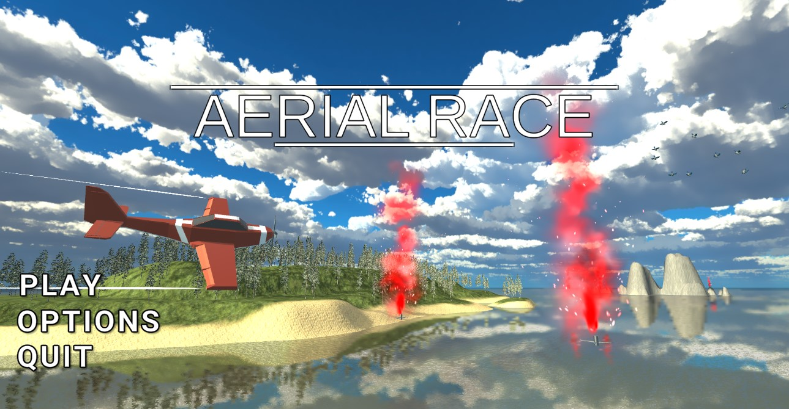

Maël Boisselot
J'ai 23 ans et je suis actuellement en reconversion professionnelle.
Après un BTS Comptabilité et Gestion et une première année de DCG (Diplôme de Comptabilité et Gestion) j'ai décidé de me réorienter vers un domaine qui me passionne : le jeu vidéo.
J'ai comme projet professionnel de devenir Game Developper pour avoir la possibilité un jour de réaliser mon propre jeu auquel je réfléchis depuis des années.
Voici le premier jeu que j'ai réalisé sur Unity en C#

C'est un jeu de parcours aérien chronométré réalisé dans le cadre de ma formation en autodidacte.
J'ai appris ce langage afin de réaliser différents projets sur Unity.
Il m'a permis de m'ouvrir au monde de la programmation et de mettre en oeuvre mes premiers programmes.
C'est notamment avec ce langage que j'ai créé mon premier jeu : AERIAL RACE.
J'ai appris ce langage dans l'objectif de créer ce portfolio.
Je me suis formé seul sur le site OpenClassroom.